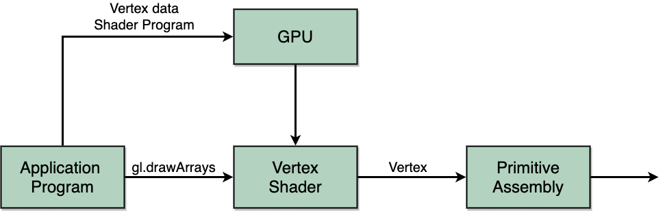

计算机图形学
第二章 图形学编程
着色器基础
着色器基础
简介
- 顶点着色器
- 对每个顶点进行处理，将顶点的位置从三维世界坐标系转换到二维裁剪后的坐标系，用于流水线的下一阶段的处理，比如用于光栅化。同时还能处理顶点的其它属性，包括位置、颜色、纹理坐标等，但顶点着色器不会增加顶点
- 面片着色器
- 对光栅化后生成的每个面片计算其在窗口中对应像素的颜色及深度值
着色器基础
顶点着色器应用


着色器基础
面片着色器应用
面片光照计算

顶点光照计算 vs. 面片光照计算
着色器基础
面片着色器应用(2)
纹理映射


着色器基础
着色器编程
最早的着色器编程语言类似汇编风格，OpenGL通过扩展添加对顶点着色器和面片着色器的函数支持，主要的着色器编程语言有两种:
- Cg(C for Graphics)，是一种类似C风格的语言，可以同时用于OpenGL和DirectX
- OpenGL Shading Language(GLSL)
- 从OpenGL2.0版本以后开始提供支持，是一种具有C语言风格的高级语言，添加了对新的数据类型的支持，如矩阵、向量、采样等
- 从OpenGL3.1版本以后，程序都必须提供着色器程序
着色器基础
顶点着色器程序
#version 300
in vec4 vPosition;
void main()
{
gl_Position = vPosition;
}
- line 1. 标明当前应用WebGL环境的版本号，这里为300
- line 2. 从应用程序获得属性值输入，这里为顶点的位置，其值必须与某个程序变量相连
- line 5. gl_Position为内建变量，用于表示GPU内部的顶点位置，其类型为四维向量
着色器基础
顶点着色器执行模型
着色器基础
面片着色器程序
#version 300 es
precision mediump float;
out vec4 fColor;// out mediump vec4 fColor;
void main(){
fColor = vec4( 1.0, 1.0, 0.0, 1.0 );
}
- line 1. 标明当前应用WebGL环境的版本号，这里为300
- line 3. 声明数据精度，必不可少
- line 5. 变量，表示面片的颜色，其值可以是常量，也可以由外部数据传入
着色器基础
面片着色器执行模型

着色器基础
数据类型
- C类型：int, float, bool
- 向量：浮点向量 float vec2, vec3, vec4, 或是整型向量ivec以及布尔型向量bvec
- 矩阵：mat2, mat3, mat4，数组按列存储，访问数组元素的标准形式为m[row][column]
- C++风格的构造器：vec3 a=vec3(1.0,2.0, 3.0); 或是 vec2 b=vec2(a);
着色器基础
关于指针
GLSL中没有定义指针，所有的变量在传递时都按值传递，建立变量的本地副本。并且，因为向量和矩阵都是基本数据类型，可以直接在GLSL函数中作为输入输出使用，如mat3 func(mat3 a)
着色器基础
修饰符
GLSL也定义了许多和C/C++类似的修饰符，如const
GLSL程序中，变量可以在不同的图元、不同的顶点、不同的面片以及应用程序的不同阶段都会发生变化
在面片着色器中，顶点的属性可以在光栅化阶段通过插值计算得到对应的面片属性值
着色器基础
属性修饰符
每个顶点用属性修饰符修饰的变量最多可以改变一次值，有一些如gl_Position之类的内建变量，但是很多已在新版本中不再支持
属性修饰符也可用于用户定义的变量，如in float temperature; in vec3 velocity;
WebGL 1.0用attribute和varying修饰符区分用于输入着色器和从着色器输出的变量
着色器基础
常量修饰符
在图元中不会改变的值即为常量，可以在应用程序中修改并将其值传递给着色器，但在着色器内部不能改变。
一般常量用于往着色器传递时间、图元的包围盒、变换矩阵等信息
着色器基础
变量修饰符
变量会在顶点着色器和面片着色器之间传递，在光栅化阶段会自动通过插值计算
在WebGL 1.0标准中，在两个着色器中都用varying修饰变量，如varying vec4 color;
在新的WebGL版本中，在顶点着色器和面片着色器中，分别用out和in表示变量，如
out vec4 color;//vertex shader
in vec4 color;//fragment shader
着色器基础
命名原则
- 一般传递给顶点着色器的变量在应用程序和着色器中命名都以"v"开头，如vPosition, vColor，当然这两者是不同的变量
- 只存在着色器中的变量命名以"f"开头，如fColor，且必须具有相同的命名
- 对于常量，不需要前缀，在应用程序和着色器中可以同名
着色器基础
命名示例
顶点着色器代码
#version 300
in vec4 vPosition;
void main()
{
gl_Position = vPosition;
}
对应的面片着色器代码
#version 300 es
precision mediump float;
out vec4 fColor;// out mediump vec4 fColor;
void main(){
fColor = vec4( 1.0, 1.0, 0.0, 1.0 );
}
着色器基础
命名示例2
从应用程序传递颜色值
var cBuffer=gl.createBuffer();
gl.bindBuffer(gl.ARRAY_BUFFER, cBuffer);
gl.bindData(gl.ARRAY_BUFFER, flattern(colors), gl.STATIC_DRAW);
var vColor=gl.getAttribLocation(program, "vColor");
gl.vertexAttribPointer(vColor, 3, gl.FLOAT, false, 0, 0);
gl.enableVertexAttribArray(vColor);
传递常量
// application
vec4 color=vec4(1.0, 0.0, 0.0, 1.0);
colorLoc=gl.getUniformLocation(program, "color");
gl.uniform4f(colorLoc, color);
// fragment shader( the same in vertex shader )
uniform vec4 color;
out vec4 fColor;
void main()
{
fColor=color;
}
着色器基础
操作符和函数
GLSL提供的函数中，有类似C的标准库函数，如三角函数，数学运算函数，一些向量正则化、反射、长度计算等功能函数
并且，根据向量和矩阵的不同数据类型，提供了操作符的重载，如
mat4 a;
vec4 b, c, d;
c=b*a; // a column vector stored as a 1d array
d=a*b; // a row vector stored as a 1d array
着色器基础
数组元素交叉访问和选择
数组中的元素可以用[]或(.)操作符访问，其中数组中的元素可以用以下三种序列形式：
- x,y,z,w
- r,g,b,a
- s,t,p,q
- 如a[2]和a.b, a.z, a.p都是等效的
交叉访问操作符可以让用户更自由地操作数组中的元素，如
vec4 a, b;
a.yz=vec2(1.0, 2.0, 3.0, 4.0);
b=a.yxzw;